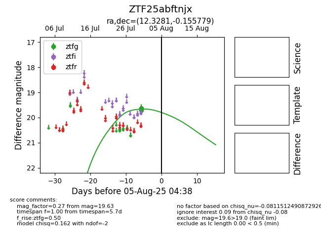

Target ZTF25abftnjx at 2025-08-05 04:38, see:
FINK: fink-portal.org/ZTF25abftnjx
Lasair: lasair-ztf.lsst.ac.uk/objects/ZTF25abftnjx
ALeRCE: alerce.online/object/ZTF25abftnjx
alt names
ZTF25abftnjx (ztf,fink)
coordinates:
equatorial (ra, dec) = (12.3281,-0.15578)
galactic (l, b) = (121.7605,-63.02269)
photometry
last ztfg=19.63
3 ztfg detections
